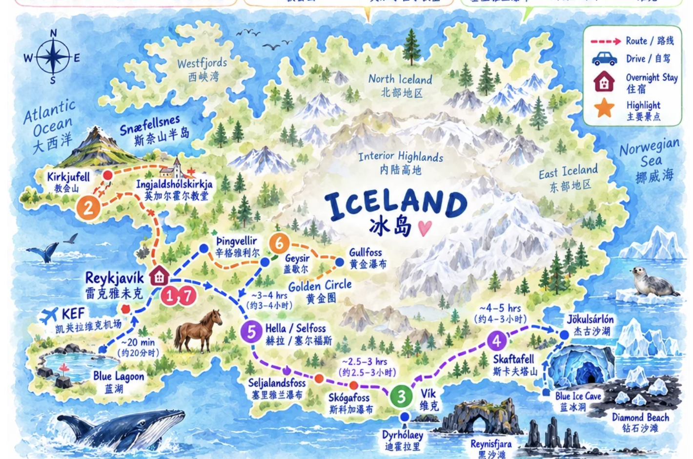

Not just a list anymore — map first, then each day with an image, route, driving time, stay, food stop, booking status and practical notes.
KEF → Reykjavík → Snæfellsnes → South Coast → glacier area → Hella/Selfoss → Golden Circle → Reykjavík.
OPEN FULL MAP →